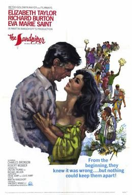

The Sandpiper
Studio: Metro-Goldwyn-Mayer
Starring: Elizabeth Taylor, Richard Burton, Eva Marie Saint
Director: Vincente Minnelli
Writer: Michael Wilson, Dalton Trumbo, Martin Ransohoff
Producer: Martin Ransohoff
The Sandpiper is a 1965 American drama film directed by Vincente Minnelli and starring Elizabeth Taylor and Richard Burton, the third of eleven films starring the power couple. The film explores the relationship between a repressed religious-school headmaster and a free-spirited California artist in the years bridging the beatnik and hippie movements of the 60's.
Trivia
- The film was originally written for Kim Novak.
Filming Locations
- California
- The Sandpiper is one of the very few major studio pictures ever filmed in Big Sur, and the story is specifically set there.
Previous Showings
2 Runs • 2 Festivals
All runs on record (2):
- June 10 - 13, 2006Ronald Colmanw/ Romola, The Long Long Trailer
- August 17 - 18, 2024Directed by Vincente Minnelliw/ Lust for Life